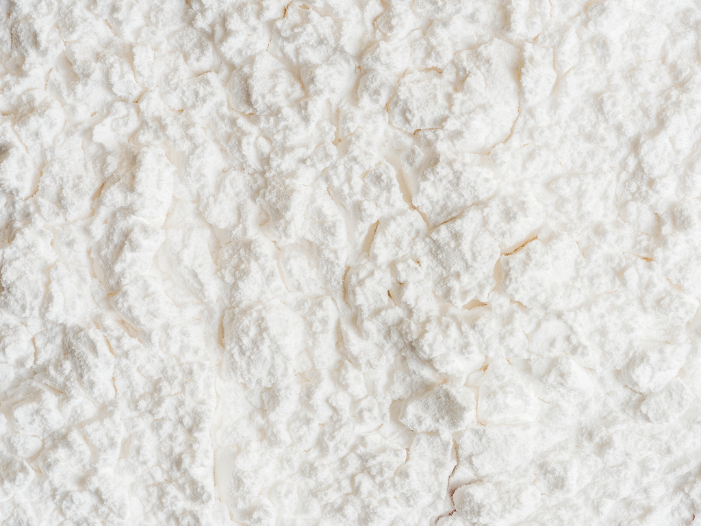
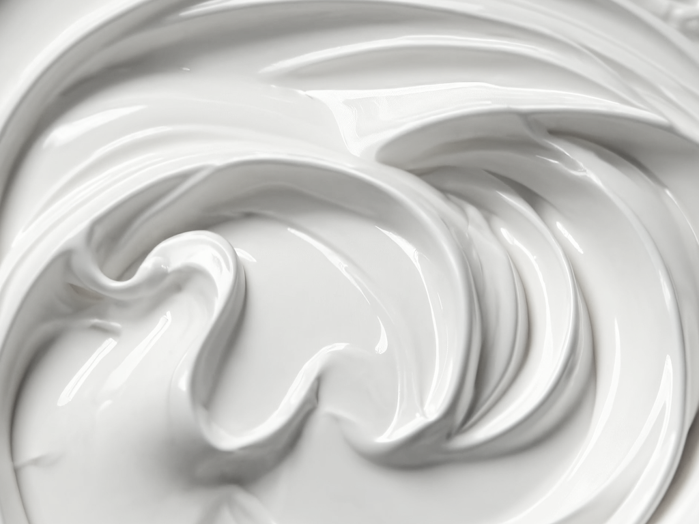
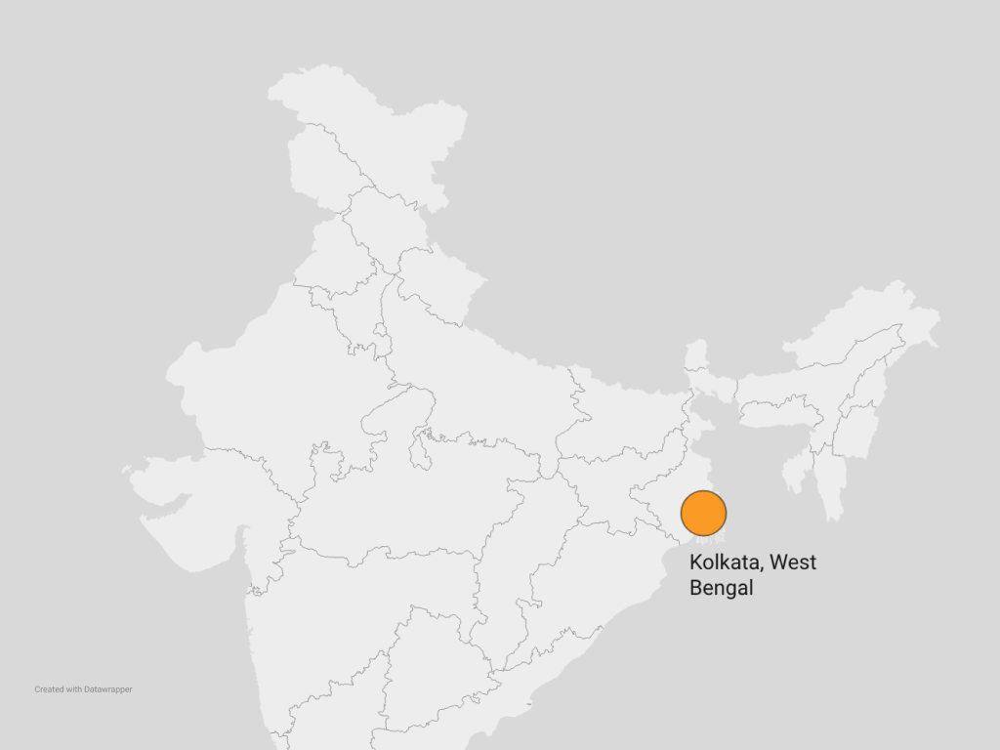
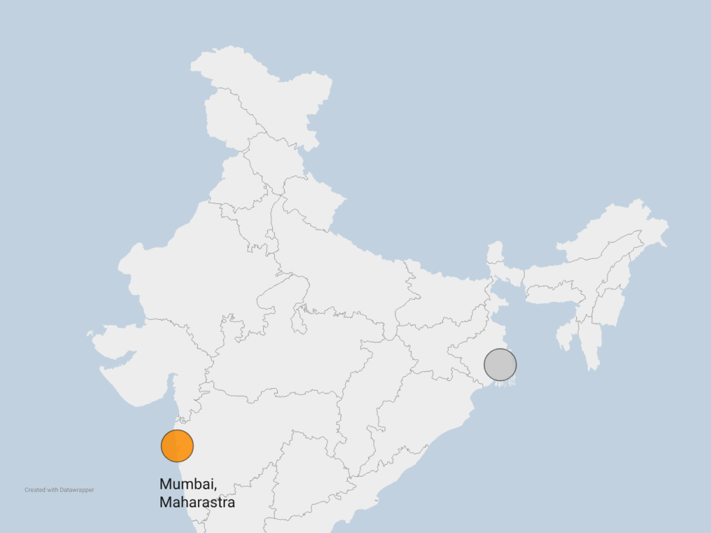
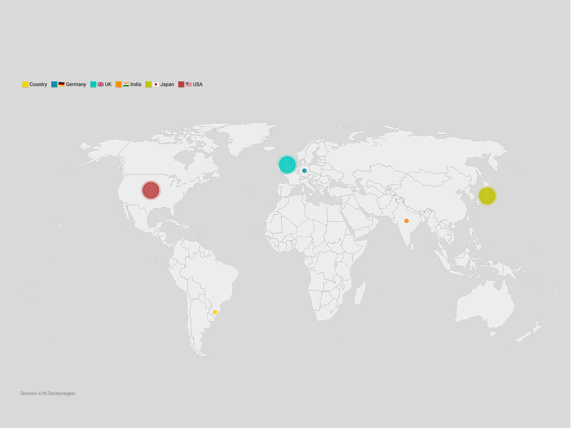
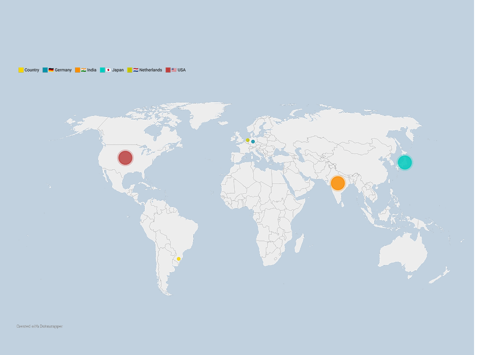

the popular products used from chuna
to emulsions, powders to cans
the epicentre of paint production from Calcutta
to Bombay
the ownership of India's paints industry from foreign brands
to a domestic enterprise





